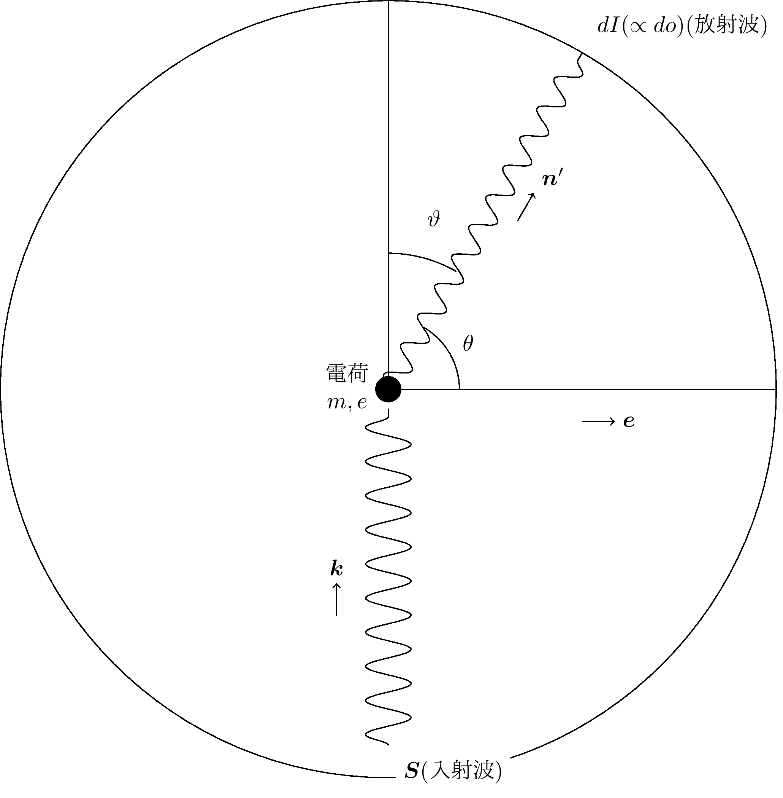

\begin{align}
do&\text{ への有効散乱断面積：} d\sigma=\dfrac{\ol{dI}}{\ol{S}}\quad\tag{78.1}
\\&\mathrm{with}\left\{\begin{array}{l}
\bm{S}\,\colon\text{入射波のポインティングベクトル}\\
dI\,\colon do\text{へ単位時間に放射されるエネルギー}\\
\ol{\phantom{S}}\,\colon\text{時間平均}
\end{array}\right.\notag
\end{align}